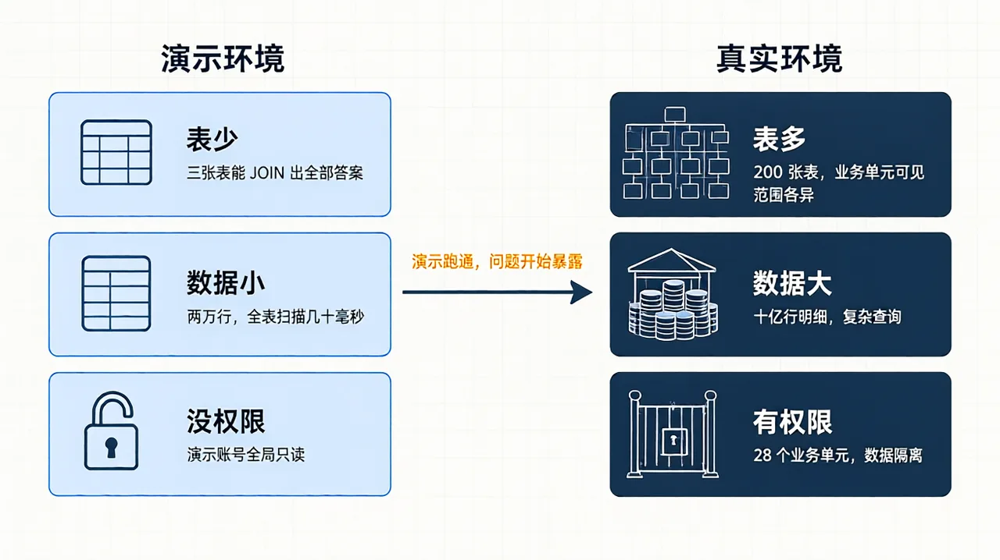
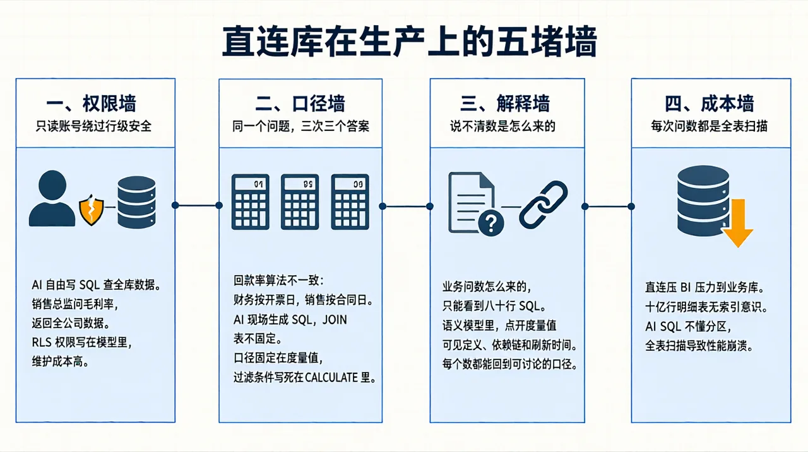
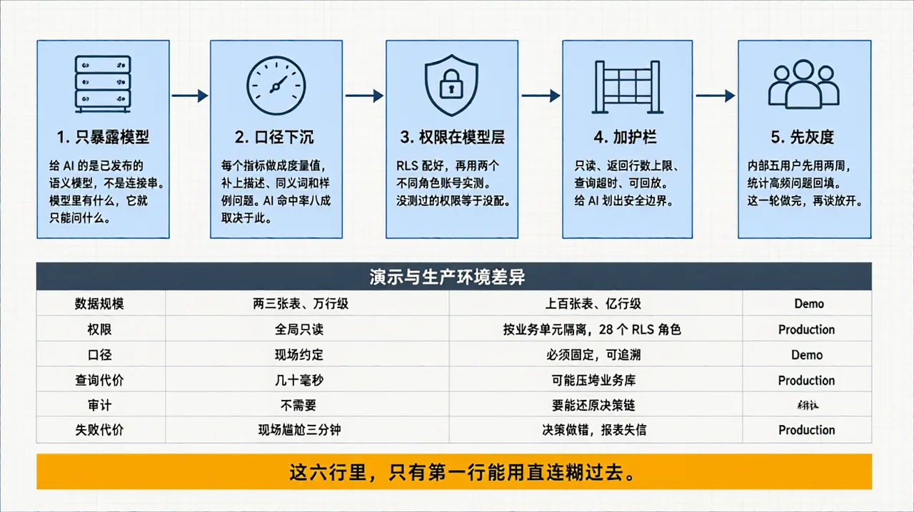
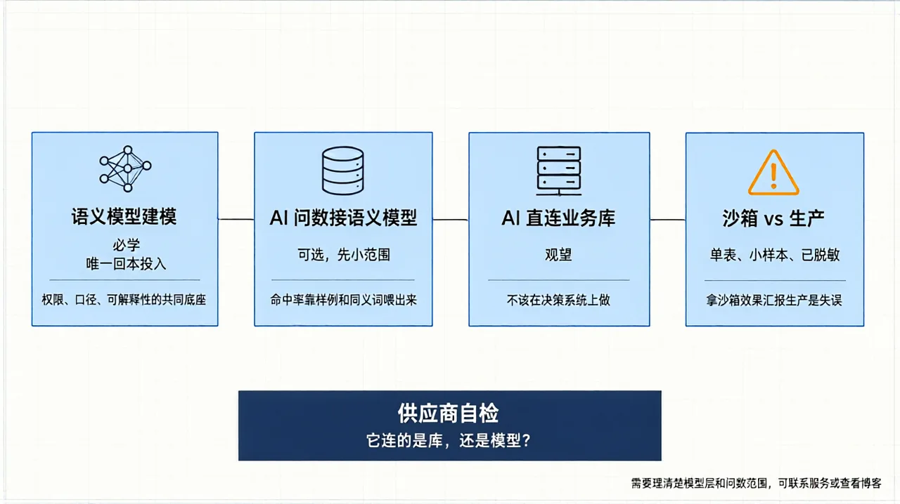

智能问数让 AI 直连数据库？我建议你别这么做
AI 直连库做问数，演示很惊艳，上生产就是事故。语义模型不是包袱，是权限、口径和可解释性的底座。
先说结论：AI 问数可以接语义模型，不要直连数据库。演示环境里直连很爽，生产环境里它是事故的起点。
11 月 17 日 Power BI 团队在 Ignite 的发布说明里，Power BI Desktop for Apps 是这样描述的——「先选一个你已经信任的语义模型，用自然语言描述你要的 app，agent 帮你搭出来」。这句话值得多看两眼：微软把自然语言放在了语义模型之上，而不是数据库之上。
大多数「智能问数」的方案图，箭头是反的。
演示为什么好看
演示环境有三个默认条件，生产环境一个都没有。
第一，表少。三张表能 JOIN 出全部答案，AI 随便写都不会错。
第二，数据小。两万行，全表扫描也就几十毫秒。
第三，没权限。演示账号是全局只读，所有人都能问所有数据。
这三条在真实系统里全部失效。真实环境是 200 张表、十亿行明细、28 个业务单元各有各的可见范围。演示跑通的东西，到这一步才开始暴露问题。

直连库在生产上的五堵墙
一、权限墙：只读账号绕过行级安全
直连库的账号通常是「全库只读」。数据库里要么没有行级安全，要么有但没人配过。
AI 一旦能自由写 SQL，它就能查到不该看的那部分。销售总监问一句「各事业部的毛利率」，返回的就是全公司的毛利率。
语义模型里，RLS（行级安全）是模型的一部分。我做过的 FinOps 看板，27 个业务单元对应 28 个 RLS 角色，权限写在模型里，换前端、换工具都还在。这层东西在数据库里做，工作量和维护成本是另一个量级。
二、口径墙：同一个问题，三次三个答案
「回款率」在你公司有几个算法？财务按开票日算，销售按合同签订日算。
直连库时，AI 每次现场生成 SQL。今天 JOIN 这张表，明天换那张，后天把条件写进 WHERE。同一个问题问三次，得到三个数，而且都「看起来对」。
语义模型里，口径固定在度量值上：
回款率 = DIVIDE ( [已回款金额], [应收金额] )
分子分母各是一个度量值，过滤条件写死在 CALCULATE 里。谁问、通过什么工具问，都是同一段逻辑。这就是「语义」两个字的实际含义——不是给 AI 看的提示词，是给整个组织看的定义。
三、解释墙：说不清数是怎么来的
业务看到数不对，第一句话一定是「这个数怎么来的」。
直连库的回答只能是一段八十行的 SQL。业务看不懂，IT 要花半天复盘，最后还是「我再查查」。
语义模型里，点开度量值就是定义、依赖链、最后刷新时间。AI 给的每个数，都能顺着模型回到一个可以被讨论的口径上。
四、成本墙：每次问数都是全表扫描
直连等于把 BI 的查询压力直接压到业务库上。
一张十亿行的明细表，AI 生成的 SQL 没有索引意识，也不懂分区。「上个月各区域的销售情况」这种模糊问题，落到执行计划里可能是三张表全扫。轻则慢，重则把订单系统拖住。
语义模型可以走导入模式，数据是预聚合过的，同样的问答代价小一到两个数量级。这不是优化问题，是能不能上线的问题。
五、审计墙：日志里只有 SQL，没有业务
直连库的审计日志只有语句：谁在几点执行了什么 SQL。
它回答不了「谁基于这个数做了什么决定」。数据出问题时，你能复盘语句，复盘不了决策链。
模型层可以记录：谁问的、问的什么业务问题、命中哪个度量值、返回多少行。这几种信息，才是治理需要的。

正确的位置：自然语言在模型上面
落地顺序有五步，别跳。
- 只暴露模型。 给 AI 的是已发布的语义模型，不是连接串。模型里有什么，它就只能问什么。
- 口径下沉。 每个要被问到的指标，做成度量值，补上描述、同义词和两三个样例问题。AI 命中率的高低，八成取决于这一步做没做。
- 权限在模型层做。 RLS 配好，再用两个不同角色的账号实测一遍。没测过的权限等于没配。
- 加护栏。 只读、返回行数上限、查询超时、生成的查询可回放。护栏不是不信任 AI，是给它划出安全边界。
- 先灰度。 内部五个业务用户先用两周，统计被问最多的问题，把答得不好的回填到模型里。这一轮做完，再谈放开。
演示和生产的差别，可以压成一张表：
| 维度 | 演示环境 | 生产环境 |
|---|---|---|
| 数据规模 | 两三张表、万行级 | 上百张表、亿行级 |
| 权限 | 全局只读 | 按业务单元隔离，28 个 RLS 角色 |
| 口径 | 现场约定 | 必须固定，可追溯 |
| 查询代价 | 几十毫秒 | 可能压垮业务库 |
| 审计 | 不需要 | 要能还原决策链 |
| 失败代价 | 现场尴尬三分钟 | 决策做错，报表失信 |
这六行里，只有第一行能用直连糊过去。

我的判断
语义模型建模：必学。 这是唯一一处投入一定回本的地方。模型不是给 AI 用的附属品，它是权限、口径、可解释性的共同底座。没有它，AI 问数就只是把 SQL 换成了中文。
AI 问数接语义模型：可选，先小范围。 值得做，但要接受一个现实——第一版命中率不会高。命中率是靠样例问题和同义词喂出来的，不是模型自己长出来的。
AI 直连业务库做问数：观望。 不是技术上做不到，是不该在承载决策的系统上做。
唯一可以直连的情形：单表、小样本、已脱敏、只读副本、不承载任何决策。这种叫沙箱，不叫生产。拿沙箱的效果去汇报生产方案，是过去两年 AI 项目最常见的失误。
如果你正在给公司选问数方案，先问供应商一个问题：它连的是库，还是模型？答案会省掉后面很多事。需要一起把模型层和问数范围理清楚，可以看看我们的服务，或者直接联系我们；之前写过的报表设计方法都在博客里。
你手上的问数需求，AI 现在连的是哪个库？
